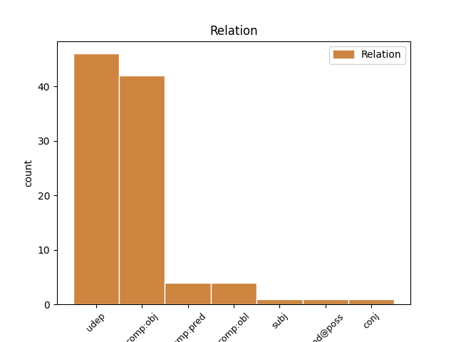
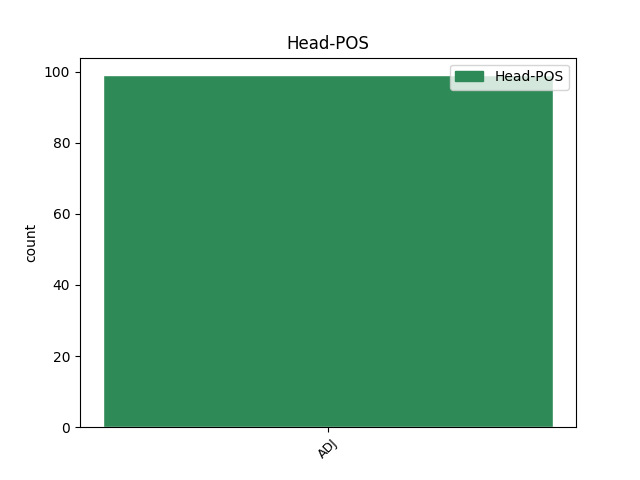
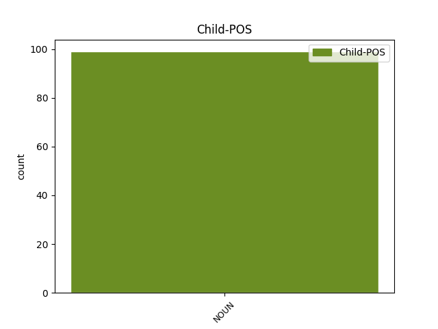

Distribution of features within this leaf



Agreement Rules sorted by frequency.
- When the dependent token is the direct object complements(comp:obj) of the head token, and the head token is ADJ and the dependent token is NOUN.
1 Z _ _ _ _ 0 _ _ _
2 konarów _ _ _ _ 0 _ _ _
3 i _ _ _ _ 0 _ _ _
4 pni _ _ _ _ 0 _ _ _
5 wyczarowywał _ _ _ _ 0 _ _ _
6 dziwne _ _ _ _ 0 _ _ _
7 figury _ _ _ _ 0 _ _ _
8 przywołujące przywoływać ADJ pact:pl:acc:f:imperf:aff Aspect=Imp|Case=Acc|Gender=Fem|Number=Plur|Polarity=Pos|VerbForm=Part|Voice=Act 0 _ _ _
9 na _ _ _ _ 0 _ _ _
10 myśl _ _ _ _ 0 _ _ _
11 słowiańskich _ _ _ _ 0 _ _ _
12 bogów bóg NOUN subst:pl:acc:m1 Case=Acc|Gender=Masc|Number=Plur|SubGender=Masc1 8 comp:obj _ SpaceAfter=No
13 . _ _ _ _ 0 _ _ _
1 Szli _ _ _ _ 0 _ _ _
2 szosą _ _ _ _ 0 _ _ _
3 warszawską _ _ _ _ 0 _ _ _
4 , _ _ _ _ 0 _ _ _
5 skąpo _ _ _ _ 0 _ _ _
6 oświetloną oświetlić ADJ ppas:sg:inst:f:perf:aff Aspect=Perf|Case=Ins|Gender=Fem|Number=Sing|Polarity=Pos|VerbForm=Part|Voice=Pass 0 _ _ _
7 latarniami latarnia NOUN subst:pl:inst:f Case=Ins|Gender=Fem|Number=Plur 6 udep _ SpaceAfter=No
8 , _ _ _ _ 0 _ _ _
9 wzdłuż _ _ _ _ 0 _ _ _
10 nowego _ _ _ _ 0 _ _ _
11 cmentarza _ _ _ _ 0 _ _ _
12 . _ _ _ _ 0 _ _ _
1 Ale _ _ _ _ 0 _ _ _
2 szybki _ _ _ _ 0 _ _ _
3 zysk _ _ _ _ 0 _ _ _
4 bywa _ _ _ _ 0 _ _ _
5 celem _ _ _ _ 0 _ _ _
6 nawet _ _ _ _ 0 _ _ _
7 najpotężniejszych _ _ _ _ 0 _ _ _
8 magnatów magnat NOUN subst:pl:gen:m1 Case=Gen|Gender=Masc|Number=Plur|SubGender=Masc1 9 mod@poss _ _
9 finansowych finansowy ADJ adj:pl:gen:m1:pos Case=Gen|Degree=Pos|Gender=Masc|Number=Plur|SubGender=Masc1 0 _ _ _
10 , _ _ _ _ 0 _ _ _
11 bo _ _ _ _ 0 _ _ _
12 rynki _ _ _ _ 0 _ _ _
13 są _ _ _ _ 0 _ _ _
14 wolatylne _ _ _ _ 0 _ _ _
15 . _ _ _ _ 0 _ _ _
1 Po _ _ _ _ 0 _ _ _
2 jego _ _ _ _ 0 _ _ _
3 obu _ _ _ _ 0 _ _ _
4 bokach _ _ _ _ 0 _ _ _
5 zwisają _ _ _ _ 0 _ _ _
6 nawleczone _ _ _ _ 0 _ _ _
7 na _ _ _ _ 0 _ _ _
8 sznur _ _ _ _ 0 _ _ _
9 perły _ _ _ _ 0 _ _ _
10 nazywane nazywać ADJ ppas:pl:nom:f:imperf:aff Aspect=Imp|Case=Nom|Gender=Fem|Number=Plur|Polarity=Pos|VerbForm=Part|Voice=Pass 0 _ _ _
11 Paternoster paternoster NOUN subst:sg:nom:m3 Case=Nom|Gender=Masc|Number=Sing|SubGender=Masc3 10 comp:pred _ SpaceAfter=No
12 . _ _ _ _ 0 _ _ _
1 Także _ _ _ _ 0 _ _ _
2 usługi _ _ _ _ 0 _ _ _
3 ogólnobudowlane _ _ _ _ 0 _ _ _
4 prowadzi _ _ _ _ 0 _ _ _
5 drugi drugi ADJ adj:sg:nom:m1:pos Case=Nom|Degree=Pos|Gender=Masc|Number=Sing|SubGender=Masc1 0 _ _ _
6 z _ _ _ _ 0 _ _ _
7 odznaczonych _ _ _ _ 0 _ _ _
8 , _ _ _ _ 0 _ _ _
9 pan pan NOUN subst:sg:nom:m1 Case=Nom|Gender=Masc|Number=Sing|SubGender=Masc1 5 conj _ _
10 Marek _ _ _ _ 0 _ _ _
11 Nosal _ _ _ _ 0 _ _ _
12 . _ _ _ _ 0 _ _ _
1 Wiatry wiatr NOUN subst:pl:nom:m3 Case=Nom|Gender=Masc|Number=Plur|SubGender=Masc3 2 subj _ _
2 słabe słaby ADJ adj:pl:nom:m3:pos Case=Nom|Degree=Pos|Gender=Masc|Number=Plur|SubGender=Masc3 0 _ _ _
3 z _ _ _ _ 0 _ _ _
4 kierunków _ _ _ _ 0 _ _ _
5 zmiennych _ _ _ _ 0 _ _ _
6 . _ _ _ _ 0 _ _ _
Disagree Examples:
1 Akcja _ _ _ _ 0 _ _ _
2 propagująca propagować ADJ pact:sg:nom:f:imperf:aff Aspect=Imp|Case=Nom|Gender=Fem|Number=Sing|Polarity=Pos|VerbForm=Part|Voice=Act 0 _ _ _
3 eutanazję eutanazja NOUN subst:sg:acc:f Case=Acc|Gender=Fem|Number=Sing 2 comp:obj _ _
4 rozkręca _ _ _ _ 0 _ _ _
5 się _ _ _ _ 0 _ _ _
6 . _ _ _ _ 0 _ _ _
1 Architekci _ _ _ _ 0 _ _ _
2 opracowujący opracowywać ADJ pact:pl:nom:m1:imperf:aff Aspect=Imp|Case=Nom|Gender=Masc|Number=Plur|Polarity=Pos|SubGender=Masc1|VerbForm=Part|Voice=Act 0 _ _ _
3 rysunki rysunek NOUN subst:pl:acc:m3 Case=Acc|Gender=Masc|Number=Plur|SubGender=Masc3 2 comp:obj _ _
4 robocze _ _ _ _ 0 _ _ _
5 są _ _ _ _ 0 _ _ _
6 zazwyczaj _ _ _ _ 0 _ _ _
7 wieloletnimi _ _ _ _ 0 _ _ _
8 praktykami _ _ _ _ 0 _ _ _
9 . _ _ _ _ 0 _ _ _
1 Bo _ _ _ _ 0 _ _ _
2 nie _ _ _ _ 0 _ _ _
3 przemija _ _ _ _ 0 _ _ _
4 miłość _ _ _ _ 0 _ _ _
5 do _ _ _ _ 0 _ _ _
6 słów _ _ _ _ 0 _ _ _
7 wypowiadających wypowiadać ADJ pact:pl:gen:n:imperf:aff Aspect=Imp|Case=Gen|Gender=Neut|Number=Plur|Polarity=Pos|VerbForm=Part|Voice=Act 0 _ _ _
8 prawdę prawda NOUN subst:sg:acc:f Case=Acc|Gender=Fem|Number=Sing 7 comp:obj _ _
9 stałą _ _ _ _ 0 _ _ _
10 , _ _ _ _ 0 _ _ _
11 wieczną _ _ _ _ 0 _ _ _
12 . _ _ _ _ 0 _ _ _
1 Byli _ _ _ _ 0 _ _ _
2 chłopi _ _ _ _ 0 _ _ _
3 zwiezieni zwieźć ADJ ppas:pl:nom:m1:perf:aff Aspect=Perf|Case=Nom|Gender=Masc|Number=Plur|Polarity=Pos|SubGender=Masc1|VerbForm=Part|Voice=Pass 0 _ _ _
4 autobusami autobus NOUN subst:pl:inst:m3 Case=Ins|Gender=Masc|Number=Plur|SubGender=Masc3 3 udep _ SpaceAfter=No
5 . _ _ _ _ 0 _ _ _
1 Do _ _ _ _ 0 _ _ _
2 przechodzącego przechodzić ADJ pact:sg:gen:m1:imperf:aff Aspect=Imp|Case=Gen|Gender=Masc|Number=Sing|Polarity=Pos|SubGender=Masc1|VerbForm=Part|Voice=Act 0 _ _ _
3 ulicą ulica NOUN subst:sg:inst:f Case=Ins|Gender=Fem|Number=Sing 2 udep _ _
4 28-letniego _ _ _ _ 0 _ _ _
5 mieszkańca _ _ _ _ 0 _ _ _
6 Ostrowca _ _ _ _ 0 _ _ _
7 Świętokrzyskiego _ _ _ _ 0 _ _ _
8 oddał _ _ _ _ 0 _ _ _
9 dwa _ _ _ _ 0 _ _ _
10 strzały _ _ _ _ 0 _ _ _
11 . _ _ _ _ 0 _ _ _